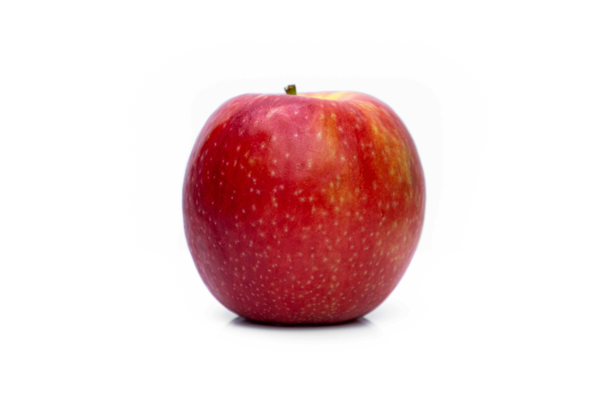

봄
여름
가을
겨울
가을
가을 제철 과일
사과

과일 자체로도 달콤한 인기만점 사과
항산화작용이 뛰어나며 비타민 C가 풍부합니다.
무화과
8~11월이 제철인 무화과
단백질 분해 효소가 많이 들어있어 소화를 도와줍니다.
매실
붉은 빛깔이 참 고운 석류
여성호르몬 유사 성분이 풍부해 여성의 과일이라 불립니다.

항산화작용이 뛰어나며 비타민 C가 풍부합니다.